Nº 01 — el más amplio
Deva
Dos dormitorios de matrimonio, un dormitorio individual y dos baños completos. Para familias o dos parejas.
Preguntar por Deva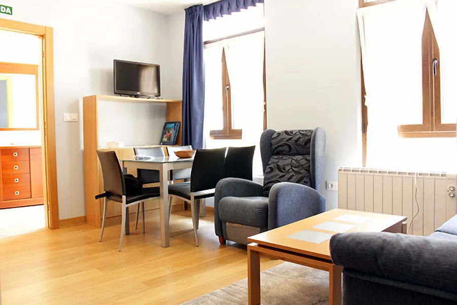
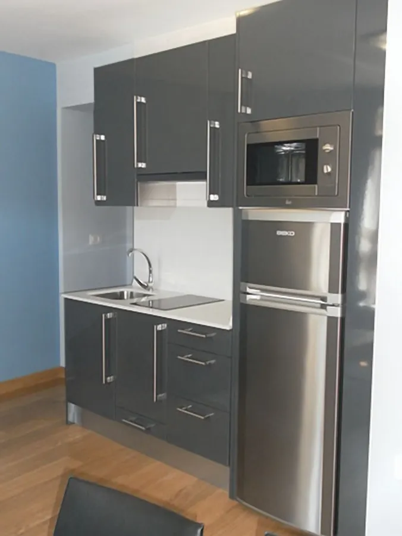
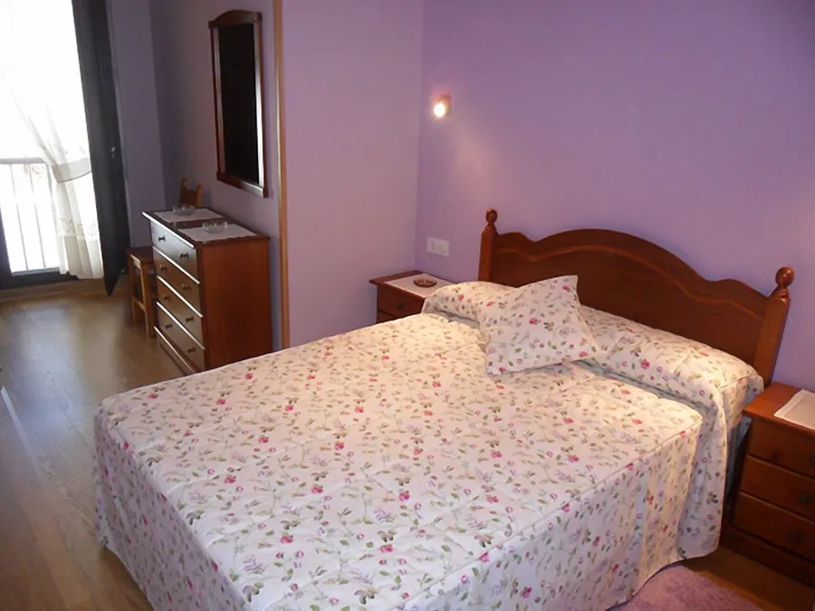
Demo preparada por Upscall · fotos y reseñas reales de La Braña de Potes
Villa de Potes · Valle de Liébana · Cantabria
Apartamentos turísticos en plena villa, puerta de los Picos de Europa. Limpios, completos, con aparcamiento gratuito a 25 metros y el trato de Esperanza.
4,966 reseñas en Google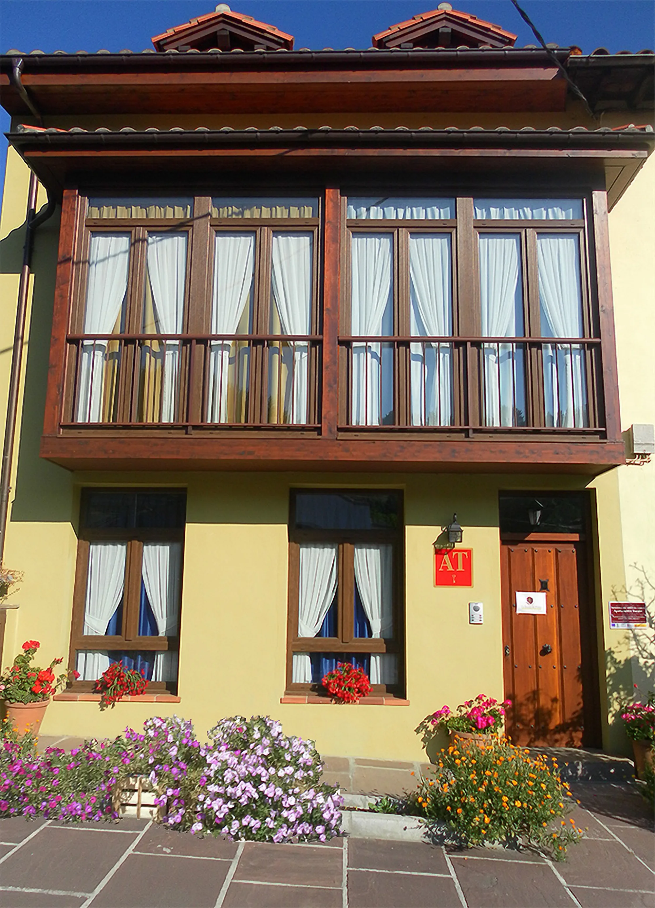
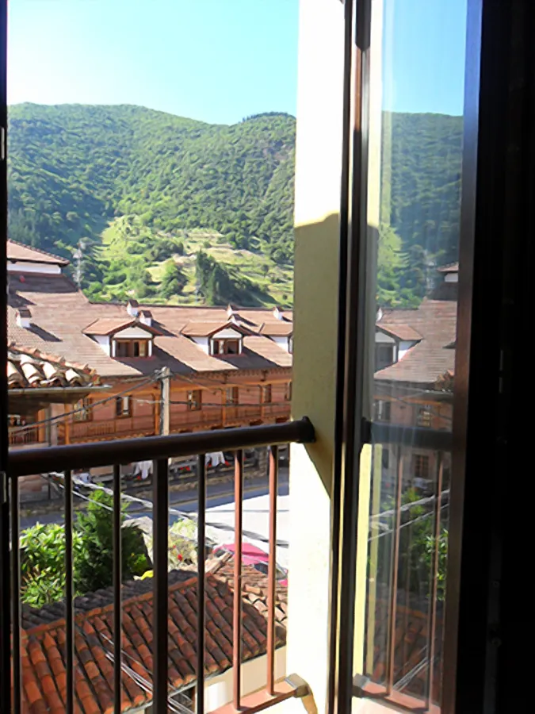
01 La casa
Estamos en la Villa de Potes, centro neurálgico del Valle de Liébana y puerta de acceso al Macizo Oriental de los Picos de Europa. Rodeados por el Parque Nacional y a solo 2 kilómetros del Monasterio de Santo Toribio.
Apartamentos de reciente construcción, todos completamente equipados: cocina, baño completo, salón con televisión y sofá cama, habitación de matrimonio, calefacción, menaje, ropa de hogar y lavadora. Llegas, dejas el coche y no vuelves a necesitarlo para nada en Potes.
02 Los apartamentos
Deva y Quiviesa son también los dos ríos que se juntan en Potes. Elige el tuyo y pregúntale directamente a Esperanza.
Nº 01 — el más amplio
Dos dormitorios de matrimonio, un dormitorio individual y dos baños completos. Para familias o dos parejas.
Preguntar por Deva


Nº 02 — salón con cocina abierta
Dormitorio de matrimonio, salón con sofá cama y cocina integrada a la luz de los ventanales.
Preguntar por Quiviesa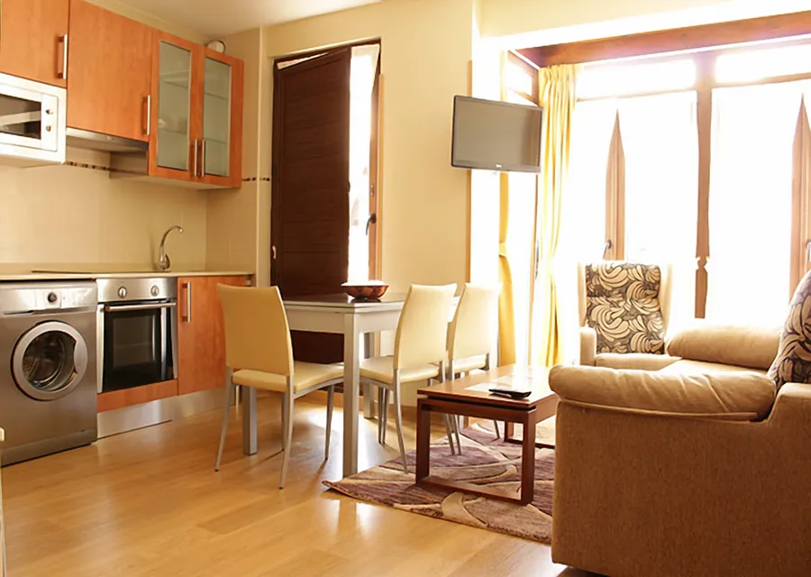
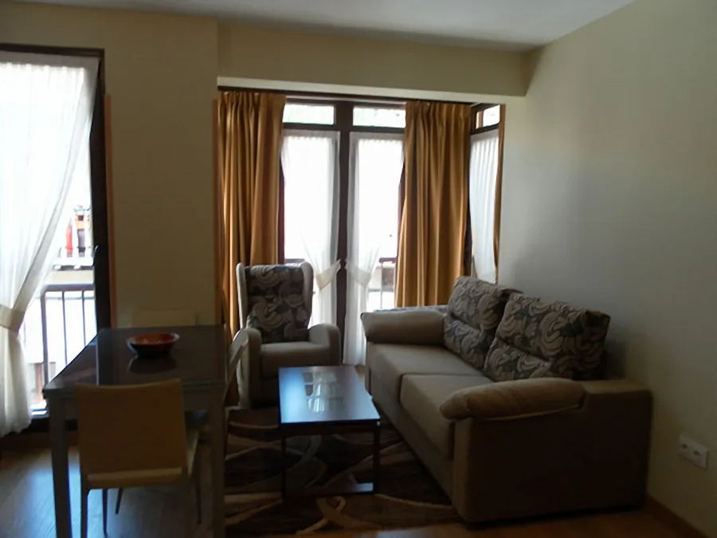
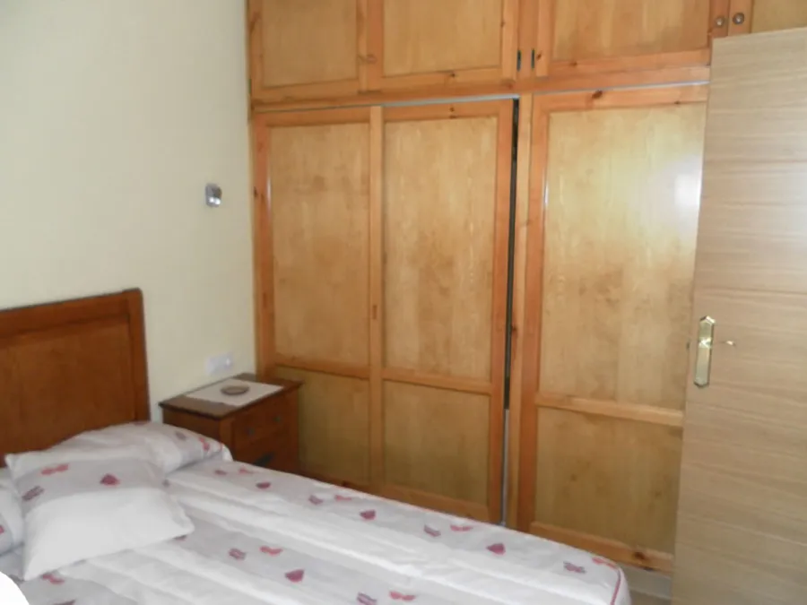
Nº 03 — cálido y recogido
Dormitorio de matrimonio, salón con sofá cama y una cocina luminosa. Todo nuevo y a mano.
Preguntar por Bullón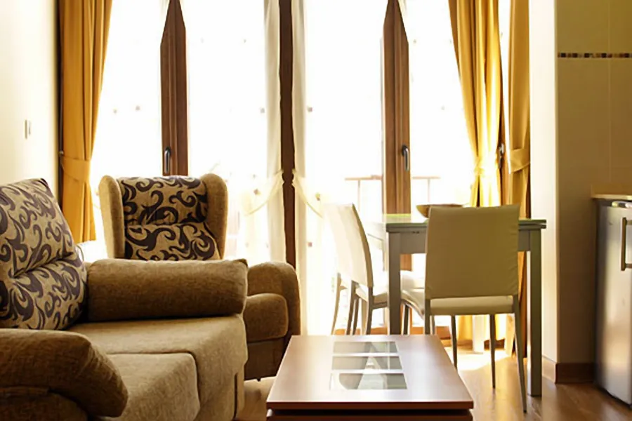
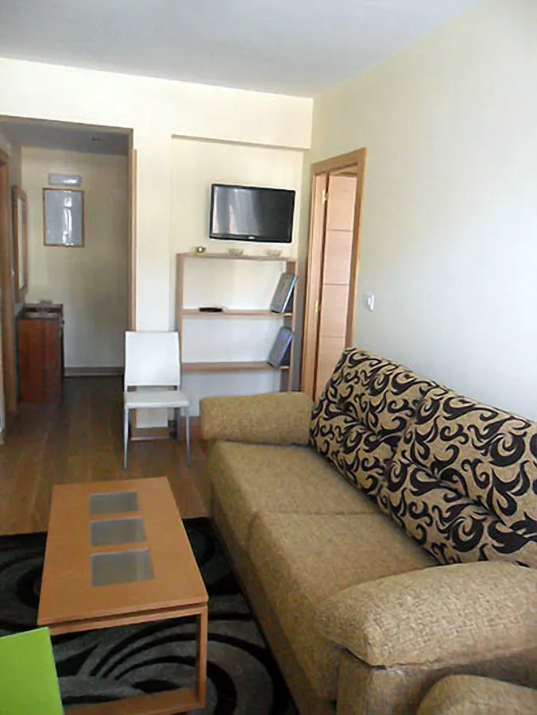
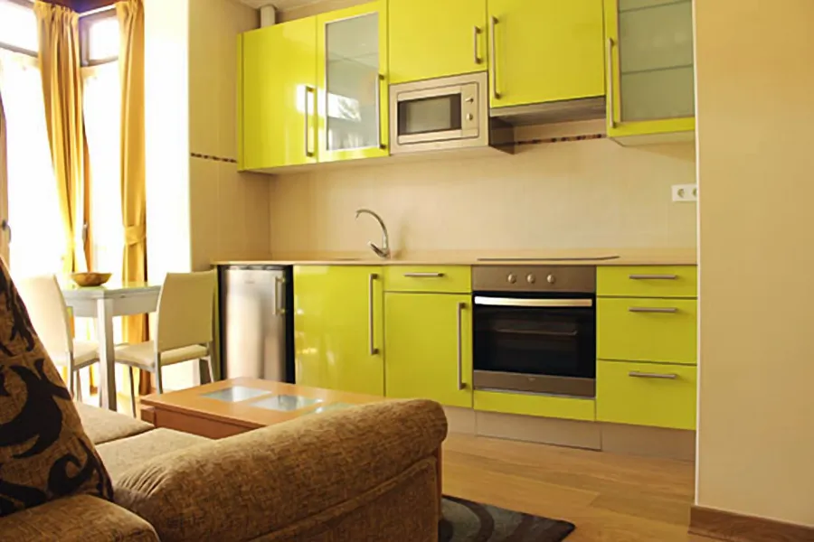
Nº 04 — el cuarto de la casa
El cuarto apartamento de La Braña, en el mismo edificio y con el mismo cuidado. Pregunta por él y Esperanza te cuenta cómo es y si está libre en tus fechas.
Preguntar por LeraEn todos los apartamentos
03 Quién te recibe
Te espera aunque llegues tarde, te acompaña hasta la puerta y te cuenta qué ver. No lo decimos nosotros: su nombre aparece en 15 de las 39 reseñas escritas que hemos recogido de Google.
04 La villa
Todos los apartamentos están en el centro de Potes: tiendas, restaurantes y servicios sin coger el coche. Y si ya tienes pensadas tus excursiones, desde aquí llegas rápido a cualquier punto de Liébana o al resto de Cantabria.
Por la ventana, tejados y monte. A la vuelta de la esquina, el cruce hacia Riaño por el Puerto de San Glorio.
Vista desde La Braña
Distancias reales desde la puerta
05 Por dentro
Arrastra · pulsa una foto para verla en grande
06 Lo que dicen
66 reseñas en Google
Lo que más se repite en las 39 reseñas escritas
07 Cómo llegar
Sin intermediarios: llama al 942 73 00 04, escribe por WhatsApp o manda un email a labranadepotes@gmail.com. Te confirmamos disponibilidad lo antes posible.
Las tarifas varían según la temporada y son por apartamento y noche, IVA incluido. Dinos tus fechas y te damos el precio exacto.
El apartamento está disponible desde las 16:00 del día de llegada y debe quedar libre a las 12:30 del día de salida. Si llegas tarde, avísanos.
Hay un aparcamiento público gratuito a unos 25 metros de la puerta. Si no lo localizas, te ayudamos.
Cocina equipada con lavadora, frigorífico, microondas y horno; baño completo con secador; salón con TV y sofá cama; calefacción, wifi, menaje, ropa de hogar, plancha y mesa de planchado.
No se admiten mascotas, y está prohibido fumar dentro del edificio.
Potes es la puerta del Macizo Oriental de los Picos de Europa y está a 2 km de Santo Toribio de Liébana. Muchos huéspedes vienen a hacer rutas, BTT o el Camino Lebaniego.